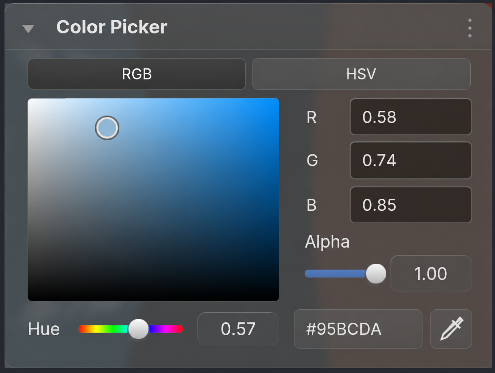
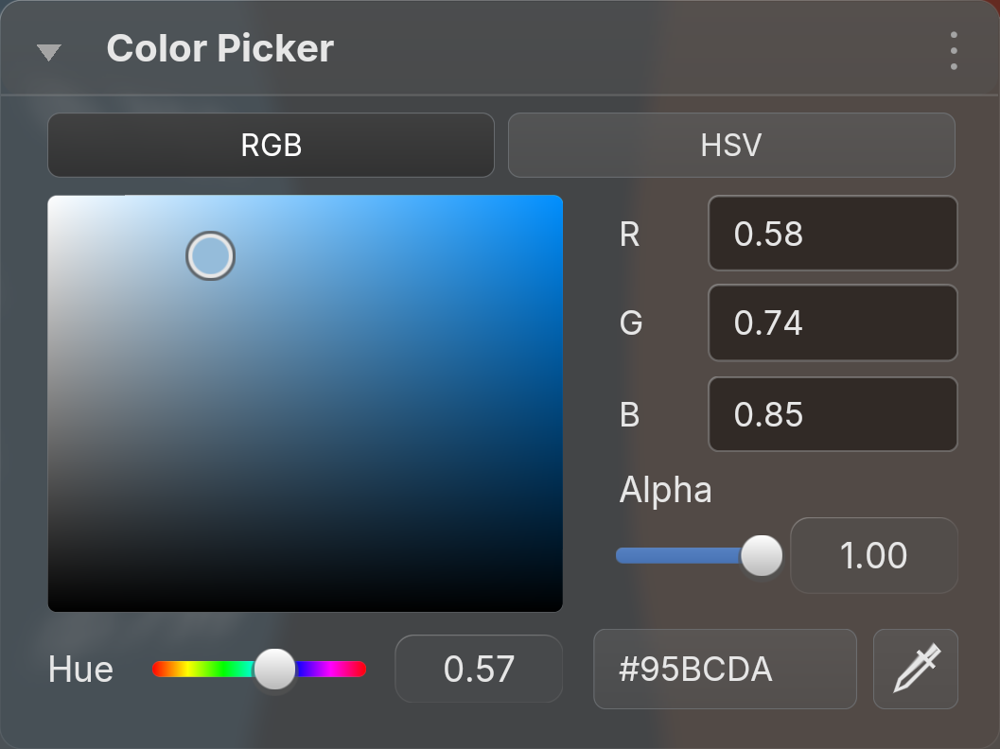

Alpha now uses the same left text origin as R, G and B. Slider placement, input ownership, BVT glass and motion are unchanged.


Reference opacity
Full images are fitted to a common display box for review. Generated framing, backdrop and glyph differences remain visible; this is not pixel-identical acceptance. The requested label origin is shared exactly in the implementation.
Blender 5.2.2 GPU capture passed. Retained resources remained stable; 60 native text batching frame pairs matched. No observed activation or restoration.
Runtime evidence · Focus audit · Generation prompt · Previous review · Overview